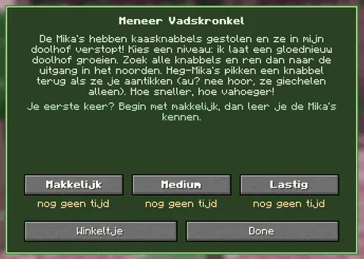
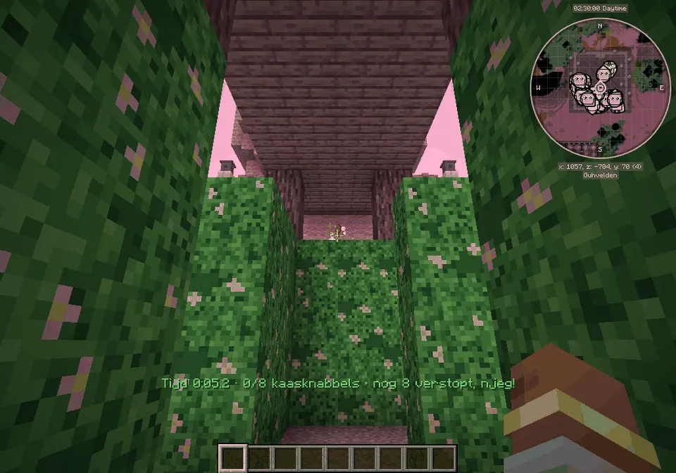
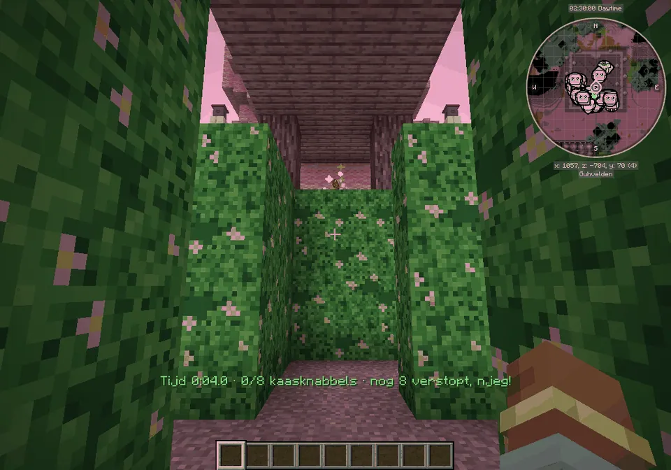

A hedge maze that is different every time: find the hidden knabbels before the hedge Mikas do.
Een heggendoolhof dat elke keer anders is: vind de verstopte knabbels voor de Heg-Mika's ze pakken.

Meneer Vadskronkel
Three level buttons with your best time under each, and the shop (the outfit, hedges and lanterns).
Drie niveauknoppen met je beste tijd eronder, en het winkeltje (het pakje, heggen en lantaarntjes).
Guhdoolhof: floating, sparkling knabbelsGuhdoolhof: zwevende, glinsterende knabbels

Above the hedgeBoven de heg
The stolen knabbels float and sparkle just above the hedges, so you see them from afar. Walk under one to grab it.De gepikte knabbels zweven en glinsteren net boven de heggen, zodat je ze van ver ziet. Loop eronder om hem te pakken.

Nog 8 verstopt
On makkelijk the bar counts how many are still hidden.Op makkelijk telt de balk hoeveel er nog verstopt zijn.
And none get lost any more: every second the doolhof checks that exactly the missing knabbels are hidden in the maze, and hides a new one when one went missing (for example when its chunk unloaded).
En er raakt er geen meer kwijt: elke seconde kijkt het doolhof of precies de ontbrekende knabbels in het doolhof verstopt zijn, en verstopt er een nieuwe als er een zoekgeraakt is (bijvoorbeeld als zijn chunk ontladen werd).
Prizes: clothesPrijzen: kleding
 Ontdekkingshoedje 4 doolhofknabbels
Ontdekkingshoedje 4 doolhofknabbels Ontdekkingsrugzakje 8 doolhofknabbels
Ontdekkingsrugzakje 8 doolhofknabbels Doolhofkompasje 6 doolhofknabbels
Doolhofkompasje 6 doolhofknabbels
Highscores in the GuhdexHighscores in de Guhdex
- Makkelijk
- Medium
- Lastig
See alsoZie ook
 Het GuhdoolhofStructuresBouwwerken
Het GuhdoolhofStructuresBouwwerken Meneer VadskronkelCharactersPersonages
Meneer VadskronkelCharactersPersonages Clothing set: Het GuhdoolhofKledingset: Het GuhdoolhofClothesKleding
Clothing set: Het GuhdoolhofKledingset: Het GuhdoolhofClothesKleding